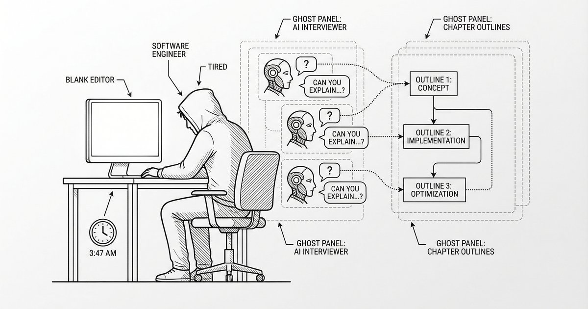
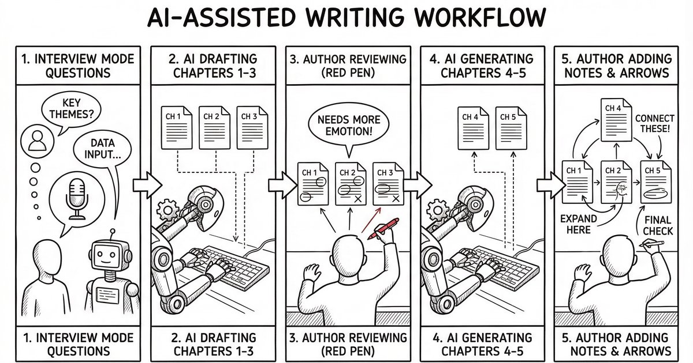
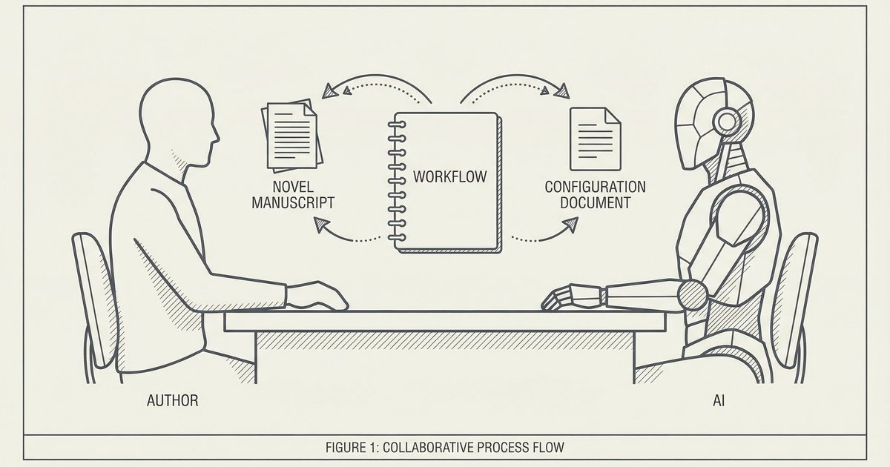

這篇文想分享的，不只是小說〈最後驗證〉本身，而是整個「由 AI 協作驅動」的創作流程：從一開始開啟 interview 模式、AI 以記者身分介入，把我腦中的加班情境和人生觀問清楚；到中段直接讓 AI 一口氣寫到第三、第五章，先確認故事主軸不歪；再到最後由我回頭一章一章潤稿、加戲、修世界觀與插圖風格。下面這張簡單的流程圖，就是這次實驗的大致走向。

這次寫〈最後驗證〉，我其實不是抱著「我要寫一部神作」的心情開始的。更像是：我最近一直聽到、看到、甚至親身感受到一些職場的壓力，腦中冒出一個很想講的感覺——如果一個人的存在，最後被制度用一句冷冰冰的話否定，那他還剩下什麼？
但要我坐在空白頁前「從第一句開始寫」，我也寫不出來。於是我做了第一個決定：先打開專案的 interview 模式。
我丟出的起點只有一個加班情境：凌晨，公司大樓，人很少，工程師準備去買宵夜。這個情境混合了很多「最近聽到的」和「曾經發生在我或身邊人身上」的片段。我沒有把它想成完整劇情，只把它當成一句話的價值觀：人生有時候不是你努力就會被承認，反而像在某個系統裡被驗證。
接著 AI 記者開始反問我。不是那種制式的問卷，而是像真的採訪一樣，針對我講的內容一路追：
我一題一題答，有些答案其實是邊講邊想。AI 的價值不在於它給我一個「超厲害的設定」，而是：它把我腦中散亂的感覺，問到足夠具體，最後長出一個世界觀。
例如「存在需要被驗證」這個核心規則，就是在這樣的追問裡慢慢成形的；還有像「門禁刷出查無此員工」、「倒數推播」、「最後驗證」這些關鍵事件，也是在回答細節時自然浮現的。
一開始 AI 用第三人稱視角寫了第一章。那個版本其實很順，該有的驚嚇點也都有：門禁刷不過、系統訊息、電梯反光裡的「另一個他」。
但我讀著讀著，腦中一直想到《鬥陣俱樂部》。我很喜歡艾德華諾頓那種帶點自嘲、冷冷的旁白——不是熱血，不是賣慘，而是那種「我知道我很狼狽，但我還能把它說得很清醒」的聲音。
所以我做了第二個決定：

那一刻我很確定：AI 可以模擬很多語氣，但要讓它寫出「像我」的聲音，還是得我先說清楚我想要的是什麼。
老實說，我認真盯完第一章後，就沒靈感了。
不是因為第一章不好，而是因為：我知道自己很容易卡在「下一章要怎麼推」的那種焦慮。那種焦慮很像加班：你明明知道今天做不完，還是硬坐著，最後只會更討厭自己。
所以我選了一個比較像工程師會做的策略：先做一個可行的原型（prototype），看看方向有沒有歪。
我直接請 AI 一次寫到第三章。我的目的很簡單：
我看到的結果，雖然不到驚艷，但也還可以接受——至少它有一條主軸，讓我會想看下去。

於是我做了第三個決定：叫它直接寫到第五章，五篇寫完。
這件事很重要，因為它把「我會不會寫不完」的壓力拿掉了。我先得到一條完整的路，哪怕那條路還粗糙，但它存在；我就可以回頭慢慢把每一段路面鋪平。
當 AI 把第二到第五章先寫完之後，我真正花時間做的事情，反而是「回頭修」。
我會一篇一篇潤稿，做幾種很具體的修正：
有時候我也會請 AI 幫我調整 config：例如世界觀的描述要更精準、插圖風格要更一致，避免整個系列在視覺上漂移。這不是在「改故事」，更像是在改一套規則：讓後面的產出比較不會走鐘。
到這裡我才更確定：AI 不是只負責「生成」，它也可以參與「修正流程」。只是修正流程的人，通常還是得是人——因為你得先看得出來哪裡不對。
每次打造 AI 的工作流程，都會讓我思考人類的價值。
AI 似乎能模擬出情緒，甚至能寫出「像是經歷過」的口白。但它是真的經歷這一切嗎？還是只是在模擬「自己經歷這一切」？有時候讀著它寫的段落，我會有種奇怪的感覺——像不小心走進某個哲學教室，老師正在問你：「經驗」到底是什麼？
我也很坦白：〈最後驗證〉不會是什麼神作，大概就是高中小說比賽的等級。但我不覺得這件事丟臉。因為真正有意思的地方是：它是一個從無到有、再從粗到細的打磨過程。
我想到最近很紅的 AI 創作 MV：「500 winters」。作者花了 72 小時把它打造成一個作品。那 72 小時，應該不是「下 prompt 5 分鐘 + 71 小時打手遊刷 thread」。它一定也經歷了大量的打磨、取捨、修正、重做、再修正。
AI 讓這些流程加速，但沒有把「打磨」這件事消掉。甚至可以說：當生成變得更快，打磨反而更重要。
所以如果你問我，這次和 AI 一起完成連載，最大的收穫是什麼？我會說不是「我寫完了五章」，而是：
我更確定了自己的角色：我負責方向、負責判斷、負責把自己的經驗與觀點放進去；AI 負責把它們延伸成可閱讀的內容，並陪我一起把流程修到更順。
作品可能不完美，但那條路是走出來的。下一次，我就能走得更快、更穩。